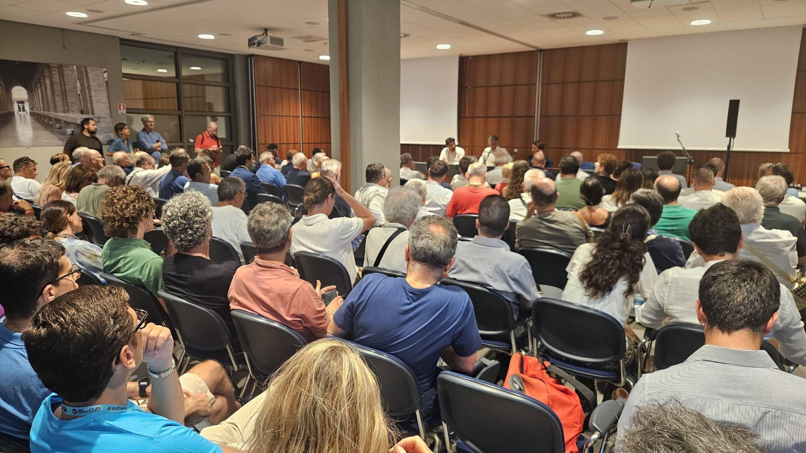
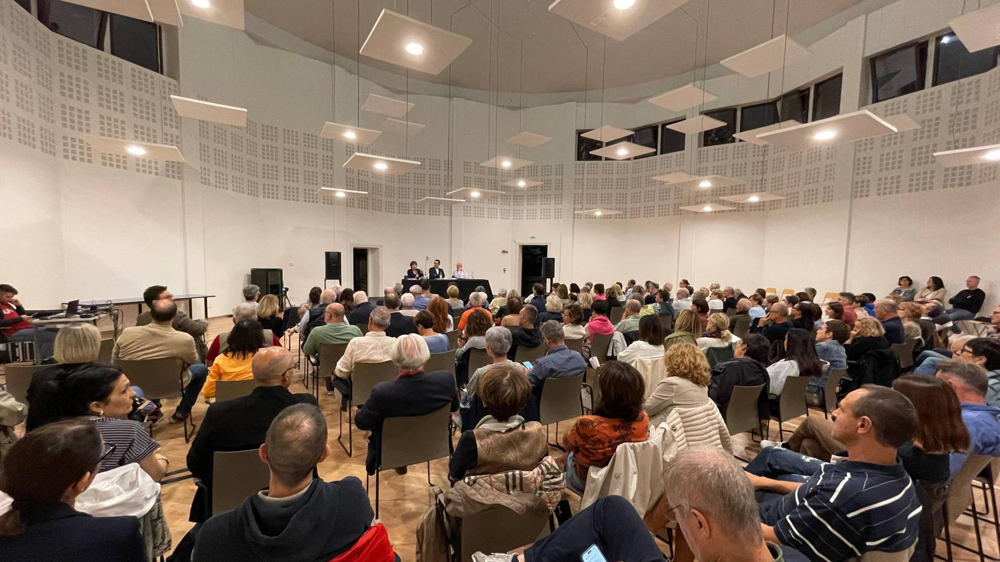
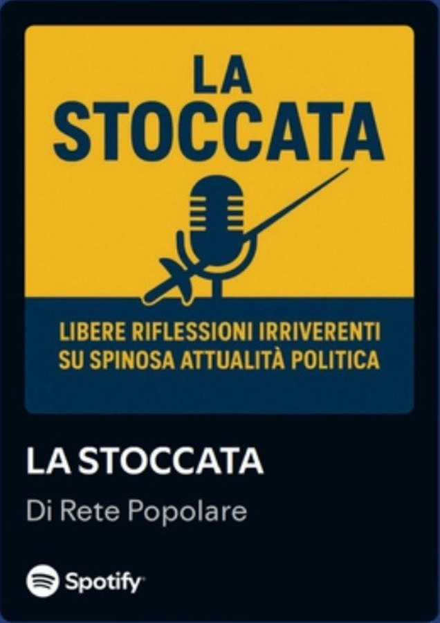
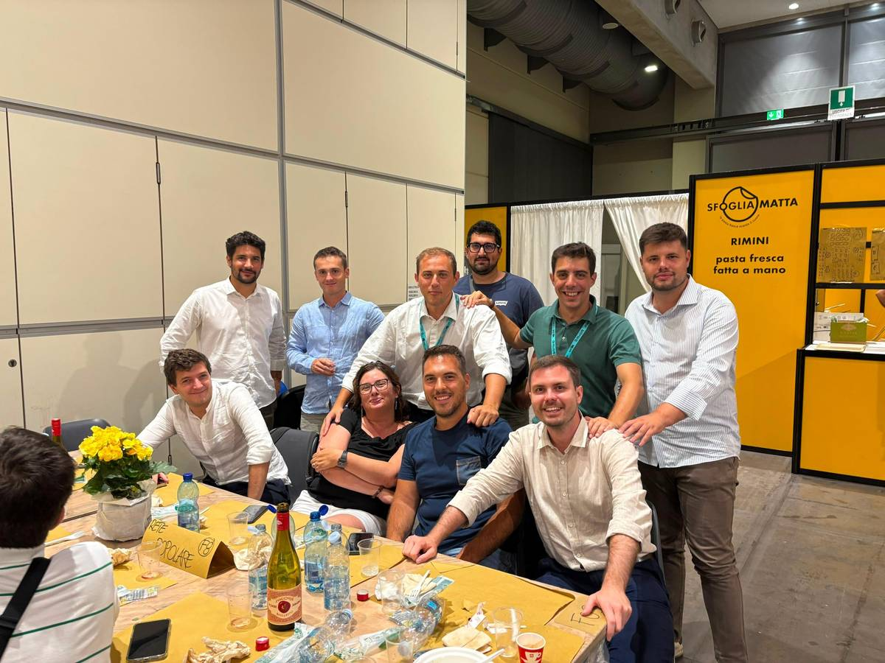

Statuto
Lo Statuto dell'Associazione
Diciotto articoli: scopi, Soci, organi, rendiconto, Consulta territoriale.
Rete Popolare
Mettiamo in rete le esperienze culturali e politiche popolari, moderate e liberali che si riconoscono nella tradizione del Popolarismo europeo.
Rete Popolare è un'associazione che nasce per mettere in rete le esperienze culturali e politiche popolari, moderate e liberali, che si riconoscono nella tradizione del Popolarismo europeo e nella cultura cattolico-liberale del Partito Popolare Europeo.
Grazie all'intuizione dei Fondatori nasce una comunità viva e aperta, unita da ideali e valori condivisi, che riconosce nella politica una chiamata al servizio comune.
Crediamo nella politica come luogo di educazione alla libertà, fondato sulla responsabilità e sulla partecipazione, capace di generare cambiamento e futuro, nel segno dei valori europei.
Siamo insieme per sostenere chi si impegna in politica, per contribuire a partiti più maturi e meno ridotti a semplici comitati elettorali, capaci di vera guida e partecipazione. I coordinamenti territoriali, costituiti su iniziativa dei soci, promuovono l'attività di Rete Popolare sui territori, come presenza culturale e pubblica e come sostegno a chi è impegnato sul campo.
Promuoviamo formazione e dialogo per far crescere una coscienza politica viva, così che l'azione sia sostenuta da una vera sostanza culturale. La nostra redazione culturale lavora su temi trasversali per sostenere e sviluppare un pensiero critico, ed elabora incontri, documenti e contributi.

Rete Popolare
Consulta territoriale
I Coordinamenti nascono su iniziativa dei Soci e portano Rete Popolare nei territori. Tocca un territorio sulla mappa per aprire la scheda del suo Coordinatore.
Scrivi alla Segreteria indicando il comune, la provincia o la regione di riferimento. Non serve raccogliere prima le adesioni degli altri soci: le verifica la Segreteria.
Rete Popolare
Rete Popolare
Comunicati, documenti di giudizio, articoli e volantini con cui Rete Popolare prende posizione sui fatti e sulle leggi che ci riguardano.

YouTube
Il podcast di Rete Popolare in diretta su Clubhouse: quindici minuti di libere riflessioni irriverenti sui temi più spinosi dell'attualità politica.
La tua pillola quotidiana di politica, con le voci di tanti amici e ospiti.


Sei già socio? Rinnovi e dati personali si gestiscono nell'area riservata ai Soci.
Trasparenza
Statuto
Diciotto articoli: scopi, Soci, organi, rendiconto, Consulta territoriale.
Regolamento
Consulta territoriale e Coordinamenti.
Apri il PDFRendiconto economico-finanziario
I documenti ufficiali sulla gestione economica e finanziaria dell'Associazione, pubblicati come previsto dallo Statuto (art. 6.5).
Scrivici: risponde la Segreteria di Rete Popolare.